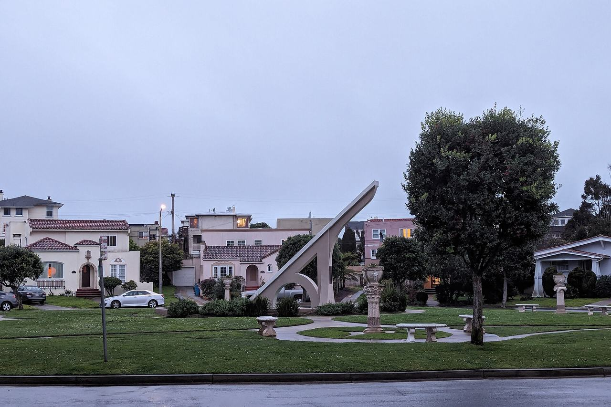

Ingleside Terraces
A curvilinear residence park platted in 1912 on the site of the former Ingleside Racetrack, developed by Joseph Leonard's Urban Realty Improvement Company around the loop of Urbano Drive and the Sundial Park at Entrada Court.

Map
Named buildings and landmarks

Streets documented so far
- Aptos Avenue
1 building; 1 in the Balboa Terrace Historic District. - Borica Street
1 building, built 1923; 1 in the Ingleside Terrace Historic District. - Broadmoor Drive
2 buildings, built 1941–1942. - Cedro Avenue
1 building, built 1912; 1 in the Ingleside Terrace Historic District. - Cerritos Avenue
1 building, built 1912; 1 in the Ingleside Terrace Historic District. - De Soto Street
8 buildings, built 1912–1914; 8 in the Ingleside Terrace Historic District. - Garfield Street
1 building, built 1937. - Head Street
1 building, built 1913; 1 in the Ingleside Terrace Historic District. - Junipero Serra Boulevard
1 building, built 1936. - Mercedes Way
4 buildings, built 1912–1914; 4 in the Ingleside Terrace Historic District. - Moncada Way
1 building, built 1912; 1 in the Ingleside Terrace Historic District. - Ocean Avenue
4 buildings, built 1917–1933; 1 in the Ingleside Terrace Historic District. - Paloma Avenue
4 buildings, built 1912–1914; 4 in the Ingleside Terrace Historic District. - Ralston Street
1 building, built 1928. - Shields Street
3 buildings, built 1951. - Urbano Drive
1 building, built 1927; 1 in the Ingleside Terrace Historic District. - Vernon Street
1 building, built 1916. - Victoria Street
5 buildings, built 1912–1927; 5 in the Ingleside Terrace Historic District. - Westwood Drive
1 building, built 1924.
Parks and public spaces
- Aptos Playground
Neighborhood park or playground, 5.0 acres. - Brooks Park
Neighborhood park or playground, 3.8 acres. - Junipero Serra Playground
Neighborhood park or playground, 1.8 acres. - Lakeview & Ashton Mini Park
Mini park, 22,216 sq ft. - Merced Heights Playground
Neighborhood park or playground, 1.2 acres.
Historic districts here
Adjacent neighborhoods
The tract sits inside the city's West of Twin Peaks boundary, and the rest of that neighborhood surrounds it north and east. Oceanview / Merced / Ingleside — which carries the Ingleside name from the same racetrack, not from this tract — lies south across Ocean Avenue, and Lakeshore west beyond Junipero Serra Boulevard.